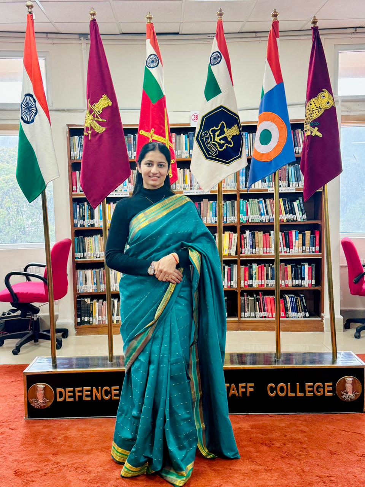

Results-driven operations leader with 10+ years of experience in the Indian Air Force managing safety-critical aviation infrastructure, navigation aids and operational systems with expertise in project execution, compliance and leadership.

Operations and infrastructure leader with expertise in aviation systems, operational reliability and project management.
Directed end-to-end operations of navigation and recovery systems ensuring uninterrupted flight operations and compliance with aviation safety standards.
Managed deployment, calibration and operational readiness of recovery aids while ensuring infrastructure reliability and regulatory compliance.
Experienced in ERP implementation support, vendor management, compliance tracking and leading cross-functional teams in high-reliability operational environments.
Indian Air Force
Operations & Infrastructure
PMP Certified Professional
PG Diploma in Aeronautical Engineering
Operational leadership and infrastructure management across aviation and ERP ecosystems.
Directed operations of navigation and recovery systems ensuring uninterrupted flight operations, aviation safety compliance and infrastructure reliability across operational airfields.
Supported ERP implementation, vendor management, system testing, process validation and documentation across multiple business divisions.
Operations leadership, aviation systems and enterprise project execution expertise.
Professional certifications and executive development programs.
Project Management Professional
Aeronautical Engineering
Information Technology
Global Operations & Supply Chain Management
University of Madras
Western Air Command Commendation
Operations leadership and project management opportunities.
+91 99966 60322
er.jyotidahiya8@gmail.com
linkedin.com/in/jyoti-dahiya